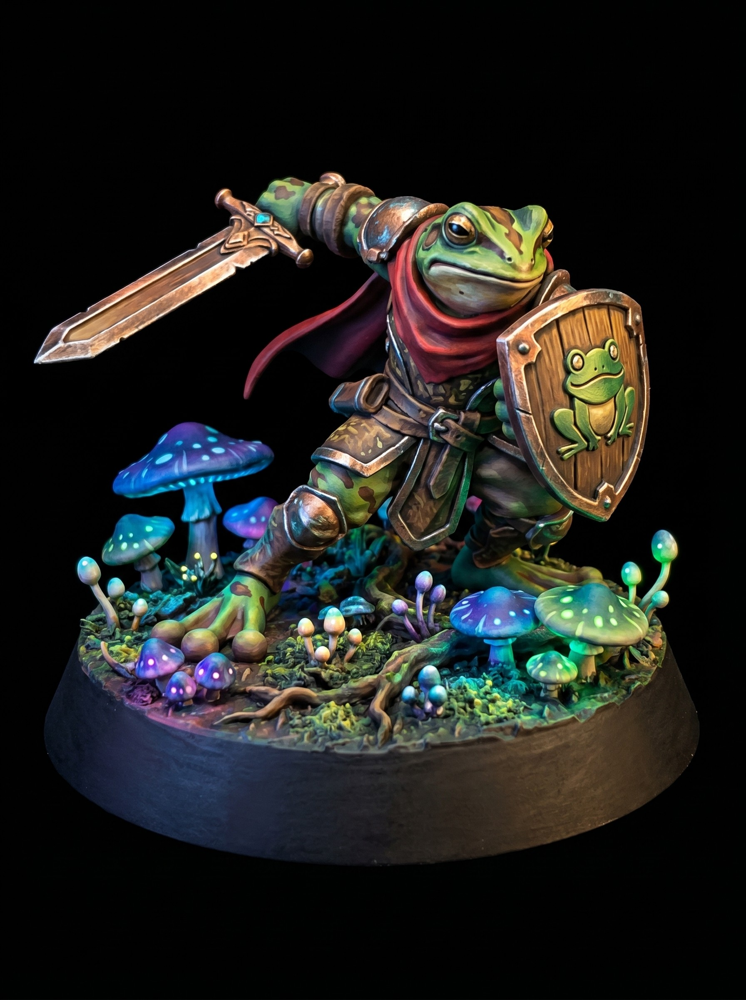

Iron Tomb Sentinel Heavy Infantry Miniature
August 23, 2026

The Iron Tomb does not bury its dead in dirt. Rune-smiths encase fallen veterans inside two tons of cast plate. They strike the breastplate once to seal the occupant. From that moment on, the sentinel stands guard forever.
These constructs hold the line when mortal formations shatter. They carry no shields because standard weapons cannot pierce the plating. A single strike from their war cleaver splits stone barricades. They feel no pain, fear, or fatigue.
Warlords drop them into choke points to turn the tide of a siege. Enemy commanders know better than to contest ground they hold. You do not outlast an Iron Sentinel. You bring siege artillery, or you surrender the field.
Get free miniatures:
- Fantasy: https://cults3d.com/@BattleFoundry
- Scifi: https://cults3d.com/@BATTLEFOUNDRYSCIFI
- Grimdark: https://cults3d.com/@DREADWORKS
- Resin Statue: https://cults3d.com/@BlacksiteSyndicate